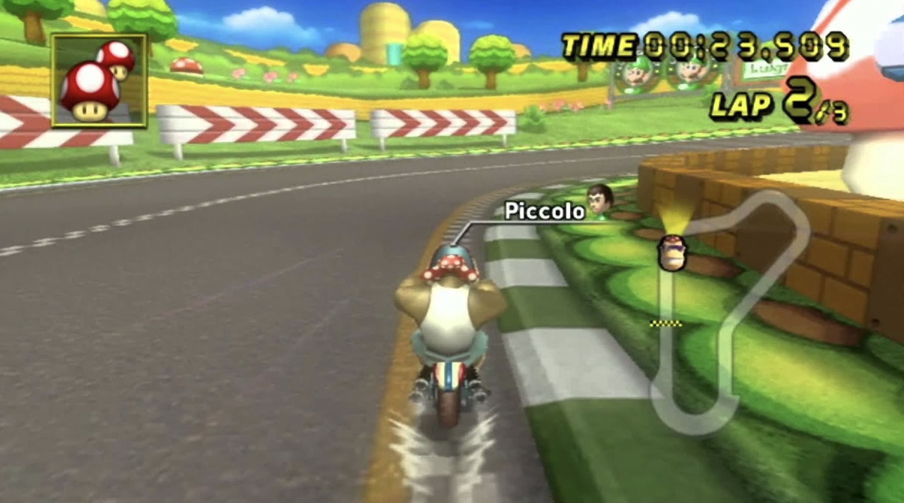
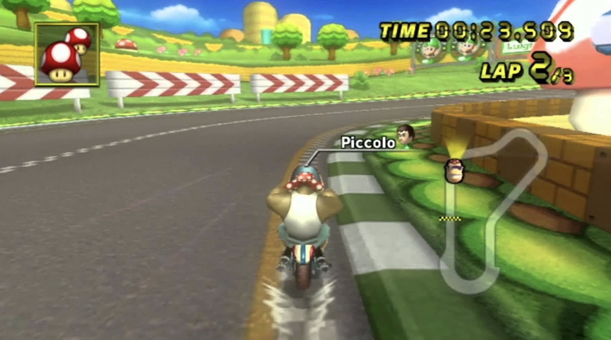

Learn how the game was created
Mario Kart Wii's general producer is Shigeru Miyamoto along with Hideki Konno, who worked with the Software Development Department at Nintendo's Entertainment Analysis & Development (EAD). Since its creation, The game sold over 37 million copies, making it the second best-selling Mario Kart game after Mario Kart 8 Deluxe and one of the best-selling video games of all time.